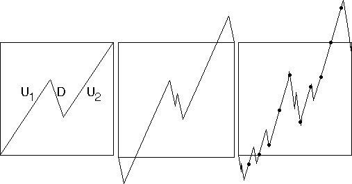

| For comparison with financial data, we shall use a version of the self-affine cartoons developed by Benoit Mandelbrot. |
| In its simplest version, we begin with a broken line segment having vertices |
|
|
| Call the linear pieces U1, D, and U2 (first up segment, down segment, and second up segment). |
| In the picture on the left we have
|
| To generate the cartoon picture, iterate this process: |
| replace each segment with a scaled version of one of these six combinations |
|
|
| Note in this example,
|
| Note the scaled version of the segments must begin and end at the endpoints of the segment being replaced. |
| If the segment being replaced has negative slope, so will two of the three scaled copies. |
| The middle picture shows the second
generation, with scaled segments
|
|  |
| The final issue is extracting the sample points. |
| Common data are sampled at equal time intervals, so we shall do the same thing here. |
By moving the points
Examples are given in the Samples section.
Return to Background.